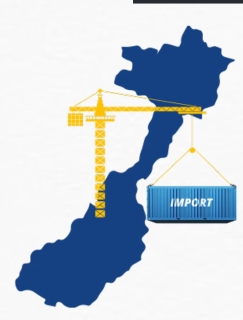
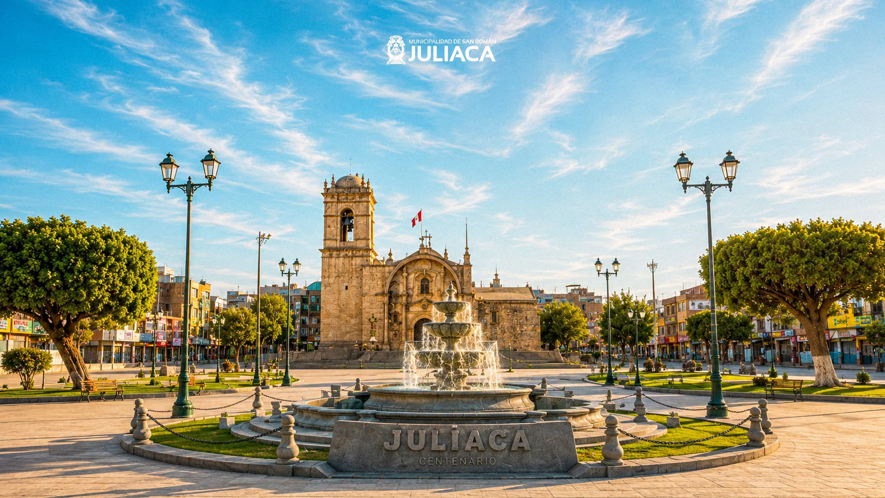

Primeros semestres
Ensayos, resúmenes y ejercicios de matemática, estadística e introducción a la economía.
Acceso para aportantesSílabos, guías y bibliografía en un solo lugar.
Juliaca · Identidad que nos acompaña
Elige un semestre y encuentra tus materiales.
Estamos preparando la biblioteca.
Los materiales se consultan en las carpetas de Google Drive.
Comparte un trabajo propio y solicita acceso al banco después de la revisión del Centro Federado.
Acceso para aportantes
Ensayos, resúmenes y ejercicios de matemática, estadística e introducción a la economía.
Acceso para aportantesInformes de micro y macroeconomía, análisis de casos y aplicaciones con datos reales.
Acceso para aportantesProyectos de investigación, trabajos de econometría y avances de tesis.
Acceso para aportantesAporta un trabajo propio. El Centro Federado revisa la autoría y los permisos y gestiona el acceso con tu correo institucional.
Cada trabajo conserva su autoría y se utiliza como referencia de estudio.
La música, la arquitectura y el ferrocarril forman parte de la memoria que nos acompaña. Aprendemos desde nuestra identidad para comprender y transformar nuestro entorno.
Juliaca · San Román · PunoNuestra bibliotecaComparte material académico con el Centro Federado.
De preferencia en PDF, con curso, tipo de material y periodo.
Indica el curso, el semestre y quién es el autor o autoriza la difusión.
Se verifican los permisos y la calidad antes de publicarlo en Drive.
Coordina el envío con el Centro Federado de Economía.

Organizamos los recursos de Economía para que el conocimiento siga creciendo entre estudiantes y generaciones.
Encuentra los materiales de tu formación en un solo lugar.
Consulta las carpetas y sus permisos de acceso.
Una biblioteca construida por y para la comunidad de Economía.